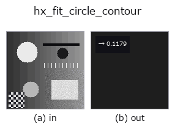

halcon_ext op• Data kinds: contour → feature
• Call: fullseye.apply(img, "hx_fit_circle_contour", a=0.5, b=0.5) (2-D model = एक image + दो scalar knobs a,b∈[0,1])
• HALCON समकक्ष: fit_circle_contour_xld (अर्थ और parameters समझने के लिए HALCON reference उपयोगी है)

*Figure synthetic 128×128 input पर सच में चलाकर मिला output है। बाईं ओर input, दाईं ओर output। Point clouds ऊपर से देखे गए scatter के रूप में (brightness = z), 1-D series line के रूप में, volumes z दिशा में maximum-intensity projection के रूप में, videos बीच के frame के रूप में, complex images amplitude के रूप में, और जो return values चित्र नहीं बन सकते वे स्वयं values के रूप में दिखाए जाते हैं।*
*Knob a output नहीं बदलता (मापा गया: 0.1 / 0.5 / 0.9 पर एक जैसा)।*
*Knob b output नहीं बदलता (मापा गया: 0.1 / 0.5 / 0.9 पर एक जैसा)।*
Stages (पहले आने वाले ops → यह op, बाएँ से क्रम में):
▸ hx_fit_circle_contour: stages का figure (docs site)
Kåsa algebraic विधि से contour points पर वृत्त fit करके fit residual (RMS) लौटाता है (छोटा = वृत्त के करीब)।
सभी contours के points को मिलाकर Kåsa की algebraic method से circle fit किया जाता है ([x, y, 1]·sol = x^2 + y^2 को least squares से हल करके, centre (sol0/2, sol1/2), radius sqrt(sol2 + cx^2 + cy^2)), और हर point की centre से distance तथा radius के अंतर का RMS max(H, W) से भाग देकर 1 पर cap करके np.float64 के रूप में लौटाया जाता है। circle के parameters खुद नहीं लौटाए जाते।
• a, b उपयोग नहीं होते।
• 3 से कम points हों तो 0.0 (perfect circle से अलग नहीं पहचाना जा सकता)। radius के square root के अंदर की value negative हो तो radius 0 माना जाता है।
algebraic method geometric distance को minimize नहीं करती, इसलिए छोटे arc (संकरी angular range) वाले point set या outliers में radius biased हो जाता है। लगभग एक line पर पड़े points के लिए minimum-norm solution का radius बहुत बड़ा हो जाता है और residual छोटा आता है (line "बड़े circle" जैसी दिखती है)। circle जैसा है या नहीं, यह तय करने के लिए hx_regress_contours के साथ इस्तेमाल करके lines को अलग करें। enclosing circle का radius hx_smallest_circle_xld है।
• gallery2d_halcon_ext family guide
• Sample data catalog (DL URL / license) — 2-D के लिए skimage.data (BSD/public) + synthetic, 3-D के लिए real data sources (Stanford/PDS आदि) के DL URL।
• Operators का स्रोत और संदर्भ — इस op family के मूल research/methods के स्रोत।
• Algorithm का मानक स्रोत (लेखक, वर्ष) और उपयोग ऊपर की family usage guide में दिए गए हैं।
नीचे का program सच में चलता है, यह जाँचा गया है (figure वाला ही input)। Studio की help में यह block buttons बन जाता है, जिनसे इसे वहीं load करके चलाया जा सकता है।
threshold 0.50 0.50 sk_find_contours 0.50 0.50 hx_fit_circle_contour 0.50 0.50
▸ यह pipeline load करें · Load करके चलाएँ
• gallery2d_halcon_ext — py -3.11 examples/gallery2d_halcon_ext.py
feature को input के रूप में लेते हैं)halcon_ext)hx_gen_circle · hx_gen_ellipse · hx_gen_rectangle2 · hx_gen_checker_region · hx_gen_grid_region · hx_gabor · hx_fit_surface1 · hx_fit_surface2
*Provenance: ops.py — 2D operator registry. यह per-op note tools/opdocs.py md से अपने-आप generate होता है (हाथ से edit न करें)।*
© 2026 Kazufumi Furuse — Fullseye operator documentation. Licensed under Apache-2.0.